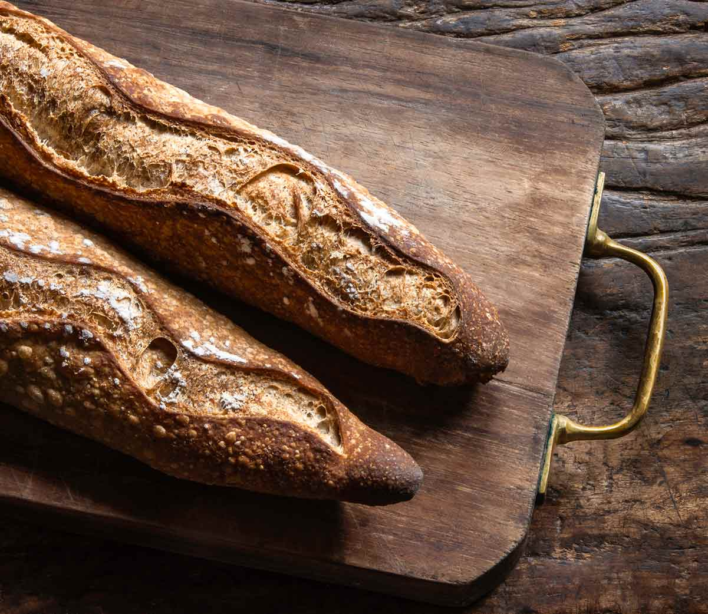

Baguette

A classic French bread with a crispy crust and soft interior.
Ingredients:
- 4 cups bread flour
- 1 1/2 cups warm water
- 2 tsp salt
- 2 1/4 tsp active dry yeast
Instructions:
- Mix yeast with warm water and let it sit for 10 minutes.
- Combine flour and salt, then add the yeast mixture.
- Knead the dough for about 10 minutes until smooth.
- Let the dough rise for 1-2 hours until doubled in size.
- Shape into baguettes and let them rise again for 30 minutes.
- Bake at 450°F (230°C) for 20-25 minutes until golden brown.
Order Baguette
Price: $15.00 per loaf